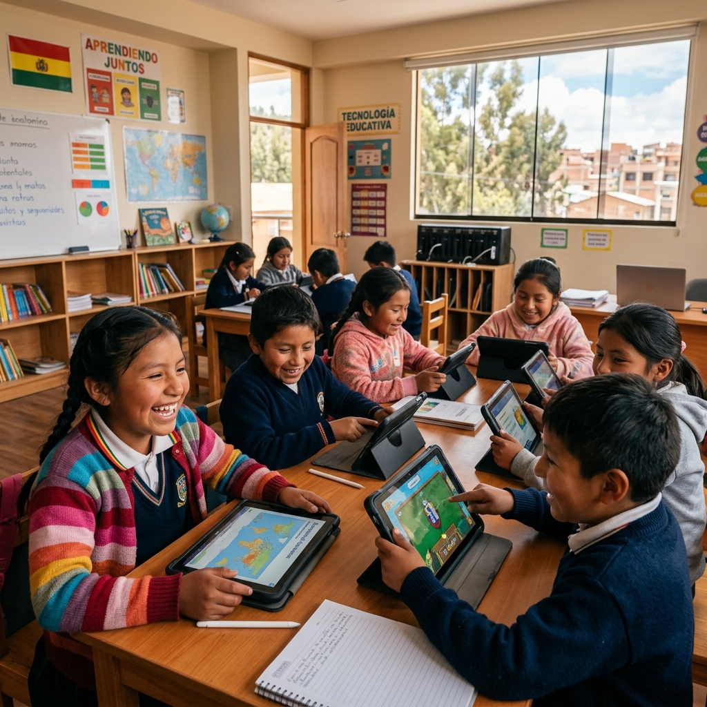

Uso de Inteligencia Artificial para potenciar el lenguaje oral en niños de preescolar en Bolivia. Acortando la brecha digital con ética y personalización educativa.
Probar Aplicación Conocer más
En muchos centros de educación preescolar en Bolivia, los niños presentan dificultades para expresarse oralmente: les cuesta pronunciar palabras, construir frases o comunicarse con seguridad. Aunque los docentes hacen grandes esfuerzos, no siempre cuentan con herramientas suficientes para acompañar este proceso de manera personalizada.
Una intervención tecnopedagógica basada en herramientas interactivas que proveen retroalimentación inmediata, fomentando que los niños interactúen, hablen y aprendan sin miedo. Transforma la brecha digital en una oportunidad para la toma de decisiones basada en datos para los docentes.
Diseñado con precisión técnica y pertinencia educativa
Definir un problema educativo concreto y contextualizado formulando una pregunta de investigación clara guiada por datos.
Seleccionar y aplicar una arquitectura de IA (Transformer/LLM) coherente para el reconocimiento de texto y lenguaje natural.
Gestionar de forma ética datos como transcripciones e interacciones de app mitigando desafíos de calidad y sesgo lingüístico.
Identificar y proponer estrategias concretas de mitigación para riesgos en proyectos educativos automatizados.
Presentar el proyecto evidenciando el impacto, la viabilidad institucional y la pertinencia pedagógica a todas las partes interesadas.
Siguiendo los lineamientos de la UNESCO para una IA Humana y Plural
Los datos (grabaciones, uso de app) son procesados localmente mediante tecnologías como Web Speech API, sin enviar información personal de los niños bolivianos a servidores externos en la nube, garantizando su anonimato absoluto.
Evitamos modelos de IA cerrados entrenados exclusivamente con acentos extranjeros que podrían interpretar mal o corregir inadecuadamente la variabilidad del habla infantil y los modismos del contexto boliviano.
La IA no reemplaza la interacción humana. Actúa como un complemento. El maestro siempre tiene la decisión final sobre la evaluación del estudiante, evitando que el algoritmo etiquete o estigmatice a los preescolares.
Identificación de la brecha tecnológica y la necesidad de mejorar el lenguaje oral mediante un taller colaborativo de 70 minutos basado en la metodología de Aprendizaje Inteligente.
Selección de arquitectura (Transformer/LLM simulado) justificando su uso ético y determinando la viabilidad institucional para dispositivos móviles (celulares y tablets).
Programación de una aplicación estática gamificada ("Nacho Aprende Pro") con minijuegos y chat simulado que no depende de internet, ideal para contextos vulnerables.
Presentación estratégica de los beneficios (interactividad, personalización, retroalimentación) evaluando métricas como pertinencia y manejo de riesgos.
Prof. de Matemática
Prof. de Primaria
Prof. de Filosofía y Sociales
Prof. de Primaria
Prof. de Educación Inicial
Lic. en Educación
Lic. en Educación